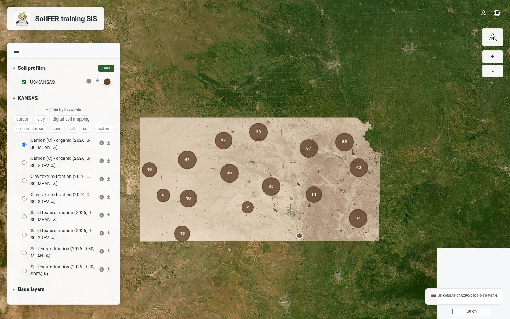

The Open National Soil Information System — open-source infrastructure for a country's soil data: maps, profiles, metadata and federation, deployed with one command.

Each OpenNSIS instance hosts the soil data of one country or organisation — from field CSVs to published maps and federated metadata.
A public OpenLayers viewer for soil property rasters (Cloud-Optimised GeoTIFFs via MapServer WMS), soil profiles with their observations, and administrative boundary layers.
Upload field CSVs, map columns to the standard model, validate against rules and country bounds, then ingest — with a full validation report and one-click prune.
Build suitability maps from published rasters with threshold-based recipes — edit, run and publish the result like any other layer.
Every published map is catalogued automatically as ISO 19115/19139 metadata, served by pyCSW — harvestable by any standard catalogue.
Purpose-built endpoints connect the instance to the Global Soil Information System federation — profiles and observations shared on the country's own terms.
Per-project switches for what leaves the server: full attributes or locations only, spatial blurring in metres, public profile limits and download visibility.
Country boundary layers from GeoJSON, zipped Shapefile or GeoPackage — reprojected to WGS 84 automatically and styled from the admin panel.
The interface ships in English, Spanish, French, Portuguese, Russian and Chinese — per-instance default plus a per-visitor switch. Adding a language is one JSON file.
The admin panel shows the installed version and what's new upstream; one server-side command applies the update and keeps all data.
Standard open-source components, wired together with Docker Compose — no exotic dependencies, nothing to license.
One country per server. On a fresh Ubuntu box, as root or a sudo-capable user:
# installs Docker, opens the firewall, clones and deploys
curl -fsSL https://raw.githubusercontent.com/FAO-SID/OpenNSIS/main/ops/single/host-install.sh \
| sudo bash -s -- NP
# same steps over SSH
git clone https://github.com/FAO-SID/OpenNSIS.git
cd OpenNSIS
ops/single/first-deploy.sh root@SERVER_IP NP
Replace NP with your ISO 3166-1 alpha-2 country
code. Optional environment knobs: LANGUAGE=es for the default
interface language and DOMAIN=soil.example.org for automatic
HTTPS with Let's Encrypt. The admin password is printed once at the end —
save it.
OpenNSIS runs as national soil information systems installed on countries' own infrastructure, and as the training environment for FAO SoilFER workshops across Asia and Latin America — each country working on an isolated instance of the same software.